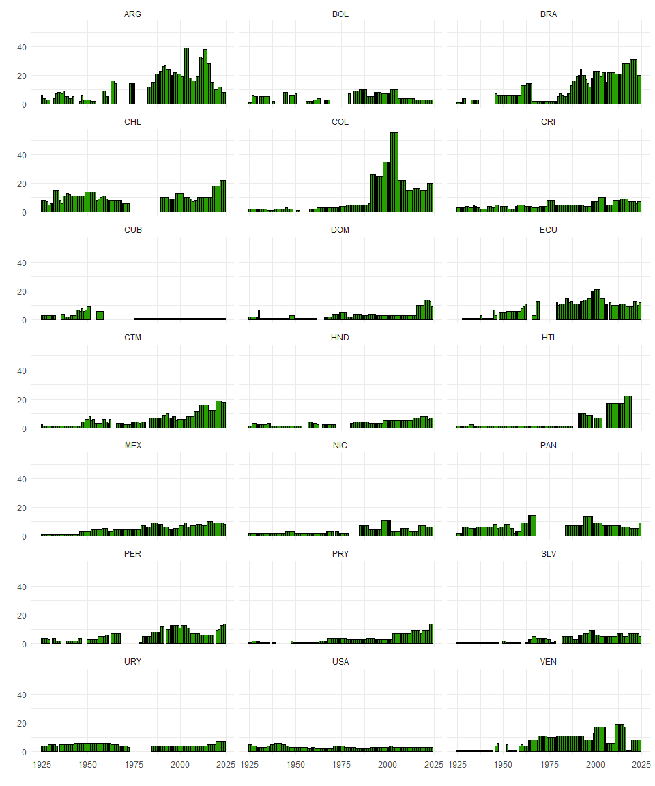

partiesAL: Legislative Parties of the Americas Since 1925
Aníbal Pérez-Liñán, Nicolás Schmidt, Daniela Vairo
Description
The partiesAL package provides two interconnected datasets on legislative parties and political coalitions across 21 countries in the Americas, including 20 Latin American countries and the United States. The current version covers the period from 1925 to 2024, with ongoing updates to incorporate new legislative periods.
The first dataset, parties, contains annual information on political parties and their legislative representation, with the party (or party faction) as the unit of analysis. It includes data on legislative seats, party affiliations, presidential parties, and governing coalitions.
The second dataset, parties2, aggregates this information at the country-year level and provides additional indicators of party system characteristics, including the effective number of parties and the legislative strength of presidents and governing coalitions in both chambers of congress.
Users can access the data by installing the partiesAL R package using the instructions below. Alternatively, both datasets are available for direct download in CSV, XLSX, and Stata (DTA) formats, allowing their use across different statistical software environments.
Detailed definitions and coding procedures for all variables are provided in the accompanying codebook, available through the link below.
parties and parties2
The structure of the databases is as follows
str(partiesAL::parties)
#> 'data.frame': 12700 obs. of 23 variables:
#> $ cowcode : num 160 160 160 160 160 160 160 160 160 160 ...
#> $ ccode : chr "ARG" "ARG" "ARG" "ARG" ...
#> $ year : num 1925 1925 1925 1925 1925 ...
#> $ legis : num 1 1 1 1 1 1 1 1 1 1 ...
#> $ date_low : POSIXct, format: "1924-03-02" "1924-03-02" ...
#> $ date_upp : POSIXct, format: "1925-03-01" "1925-03-01" ...
#> $ pty_acrn : chr "UCR" "CONS" "PDP" NA ...
#> $ pty_name : chr "Unión Cívica Radical" "Conservadores" "Partido Demócrata Progresista" "Otros" ...
#> $ pty_code : num 1.60e+08 1.60e+08 1.60e+08 1.61e+08 1.61e+08 ...
#> $ fac_name : chr "Radical Antipersonalista" NA NA NA ...
#> $ fac_code : chr "160189001001" NA NA NA ...
#> $ s_low : num 3 14 14 15 17 18 72 3 8 11 ...
#> $ ts_low : num 158 158 158 158 158 158 158 158 158 158 ...
#> $ s_upp : num 13 8 0 0 0 2 4 0 2 0 ...
#> $ ts_upp : num 30 30 30 30 30 30 30 30 30 30 ...
#> $ presp : num 1 0 0 0 0 0 0 0 0 0 ...
#> $ cl_other : num 1 0 0 0 1 0 0 0 0 0 ...
#> $ cl_altman : num NA NA NA NA NA NA NA NA NA NA ...
#> $ cl_deheza : num NA NA NA NA NA NA NA NA NA NA ...
#> $ cl_dpi : num NA NA NA NA NA NA NA NA NA NA ...
#> $ founded : num 1890 1874 1914 9999 8888 ...
#> $ source : chr "PHW 1928, p.3/(Gibson 1996, 40)" "PHW 1928, p.3/(Gibson 1996, 40)" "PHW 1928, p.3/(Gibson 1996, 40)" "PHW 1928, p.3/(Gibson 1996, 40)" ...
#> $ observaciones: logi NA NA NA NA NA NA ...
str(partiesAL::parties2)
#> 'data.frame': 2100 obs. of 14 variables:
#> $ cowcode : num 160 160 160 160 160 160 160 160 160 160 ...
#> $ ccode : chr "ARG" "ARG" "ARG" "ARG" ...
#> $ year : num 1925 1926 1927 1928 1929 ...
#> $ legis : num 1 1 1 1 1 1 0 1 1 1 ...
#> $ newleg : num 1 1 0 1 0 1 0 1 0 1 ...
#> $ date_h : POSIXct, format: "1924-03-02" "1926-03-07" ...
#> $ date_s : POSIXct, format: "1925-03-01" "1925-03-01" ...
#> $ p_h : num 0.0196 0.2095 0.2095 0.5613 0.5613 ...
#> $ p_s : num 0.481 0.481 0.481 0.269 0.269 ...
#> $ g_h : num 0.131 0.209 0.209 0.561 0.561 ...
#> $ g_s : num 0.481 0.481 0.481 0.269 0.269 ...
#> $ coalition: num 1 0 0 0 0 0 NA 1 1 1 ...
#> $ enph : num 3.41 2.34 2.34 1.75 1.75 ...
#> $ enps : num 2.04 2.04 2.04 1.91 1.91 ...Installation
To install the development version from GitHub:
if (!require("remotes")) install.packages("remotes")
remotes::install_github("Nicolas-Schmidt/partiesAL")Example
In the following example, the parties database is used to visualize the temporal evolution of the number of political parties in the congresses of each country.
library(partiesAL)
nparty <-
partiesAL::parties %>%
select(ccode, pty_code, year, legis) %>%
filter(legis %in% c(1,3)) %>%
distinct() %>%
select(-pty_code, - legis) %>%
split(., .$ccode) %>%
lapply(., table) %>%
lapply(., as.data.frame) %>%
do.call('rbind', .)
ggplot(nparty, aes(x = as.numeric(as.character(year)), y = Freq))+
geom_bar(stat="identity", width = NULL, fill = "#279F00", color = "black") +
facet_wrap(~ccode, ncol = 3) +
theme_minimal() +
labs(x = "", y = "")
#> Warning in geom_bar(stat = "identity", width = NULL, fill = "#279F00", color =
#> "black"): Ignoring empty aesthetic: `width`.